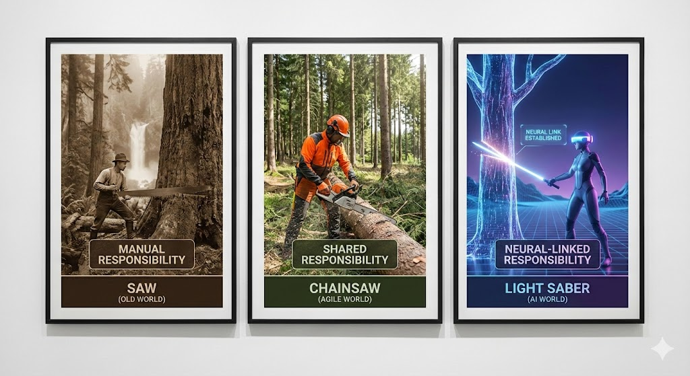

Solving RAISE (Rapid AI Increases Skills Expectations) by transforming your team into AI-native builders.
View Training CurriculumThe role of the software engineer is changing. We provide the structured pathways needed to navigate this shift.
Accelerate the growth of junior developers. Using AI tools as multipliers, they learn to deliver complete features, conduct code reviews, and handle deployments faster than ever.
Beyond coding, we teach the new essentials: Prompt Engineering, Context Management (RAG), and Agentic Workflows. These are the building blocks of modern software delivery.
AI moves fast. Our pathways include strategies for continuous learning, ensuring your team stays ahead of the curve with the latest models and tools.
"The skills gap is the distance between what is possible with AI and what you can deliver."
Change can be paralyzing. As we move from a world of knowns and memorisation to a world of unknowns and creativity, the ability to create bespoke solutions becomes paramount. It is no longer enough to just code; you must be able to deliver, test, and secure these solutions.

As our tools become more powerful, the responsibility on the individual grows. A neural link needs to be established between the creator and the tool.
The Waterfall World
Manual, slow, and labor-intensive. You provide all the energy. It's safe but inefficient. If you stop, the work stops. Progress is linear and predictable, but painfully slow.
The Agile World
Faster and more powerful. It amplifies your effort but requires respect. Mistakes happen faster and can be more damaging. You are still guiding every cut, but with more leverage.
The AI World
An elegant weapon for a more civilized age? Not just yet. It cuts through complexity instantly. It requires focus, discipline, and a "neural link" to control. Without responsibility, it can destroy the user. With it, you can move mountains.
To bridge the gap from memorisation to creativity, we use simulations. This moves learners from a world of known answers to a world of creative unknowns.
Workshops isolate specific enterprise challenges—like ticket triage or legacy code refactoring—and solve them using AI agents.
Participants don't just watch; they build. From setting up environments to deploying active agents, every step is practical.
Simulations provide instant feedback loops, allowing engineers to iterate on their prompts and agent architectures in real-time.
Transparency is key to transformation. Our dashboard provides a real-time view of your team's upskilling progress, assessment scores, and certification status across all stakeholders.
View Stakeholder Dashboard 📈